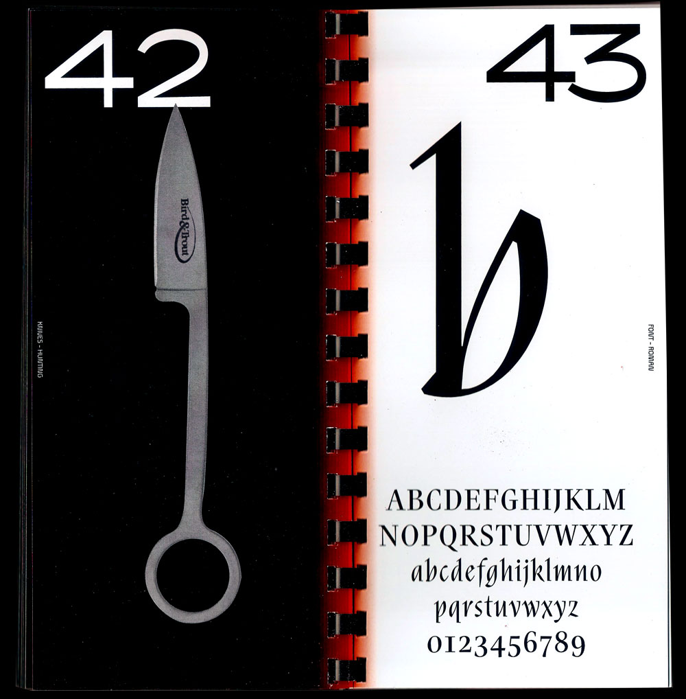
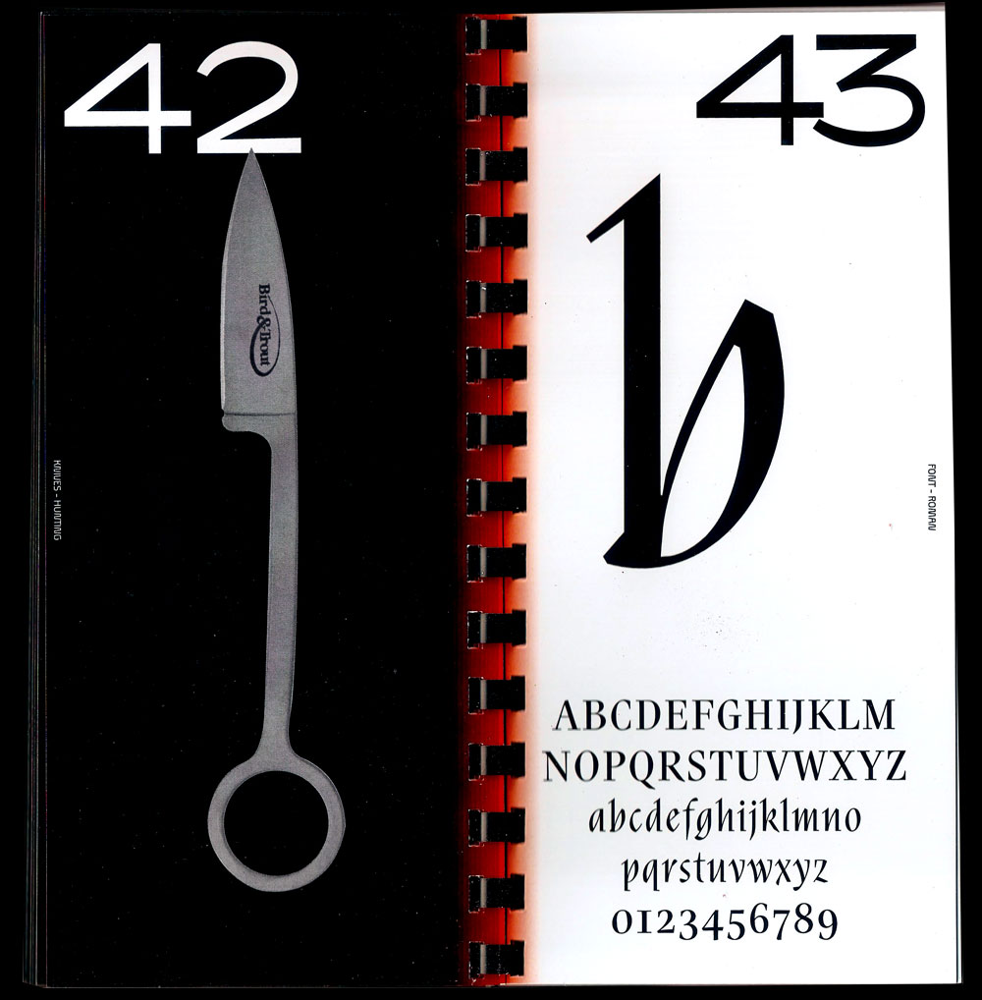

Designing a tool resides in two key factors: Its creator and its subsequent use.
The semantic factors and character of an object can be compared to the history of its creation. Knife VS Fonts is a book about knives and fonts that have a lot in common.
 
